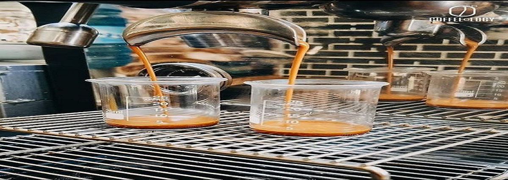
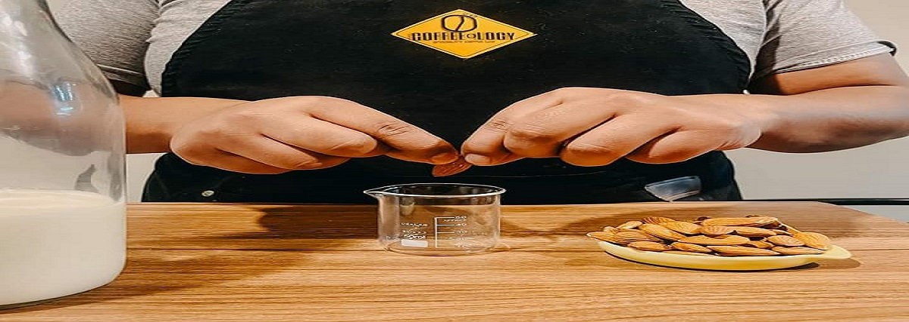

Destacados

Descubre nuestro catálogo de cafés
Descubre nuestras selecciones de cafés especiales con notas únicas y aroma inigualable.
Ver catálogo de cafés
¿Necesitas trabajo?
Postula para ser parte de nuestro equipo, pronto tendremos mas sucursales y necesitaremos gente como tu!
Manda tu curriculumBienvenidos
COFFEEoLOGY.bo es una cafeteria tematica donde podras disfrutar cafe de especialidad preparado con granos seleccionados en un ambiente agradable.
¿Que ofrecemos?
- ☕ Cafe de especialidad.
- 🧊 Bebidas frias y calientes.
- 🍰 Postres artesanales.
- 🎨 Ambiente tematico.